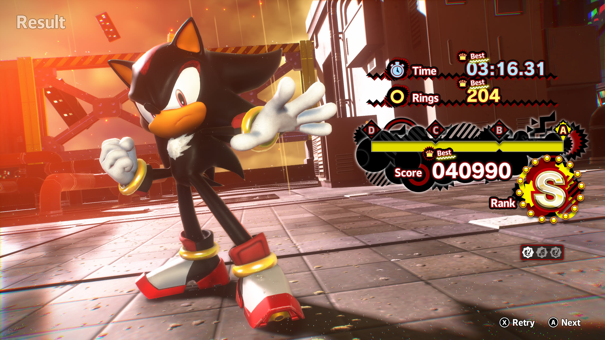

1game1week - Week 49 (12/3/25) - Sonic X Shadow Generations
Hey all! It's week 49! (12/3 -> 12/10)
Did everyone have a good Thanksgiving? My family doesn't really celebrate it much, but I have friends that do, so, hope it was a good one!
I did end up buying a few Christmas gifts, though. It's a little bit strange nowadays that Black Friday has been turned to mostly online shopping. Though, isn't it better this way?
Buying gifts for my family is always a bit of a pain. I wish they were easier to shop for, but there's really no helping it. With me, I'm just happy with an anime Bluray or a game. My sister in law has geared her gifts to be related to my dog, which is really cute. Last year, she got me a blanket with my dog's face plastered all over it, though it was for some reason really small. Perfect size to be a blanket for my dog, though!
It's been getting kind of cold here recently... So the blanket has been coming in really handy for her. Myself, I've been using a heated blanket before sleeping so my bed is nice and toasty. I'd turn on the heating, but electricity costs are insane now. Wonder if I have one of those plans where I get free electricy past a certain point at night...? I should probably check that. That'd be really useful to know, actually.
I know that to you it just looks like a new sentence, but half an hour or so has passed since I wrote the last sentence. I just checked / spoke with an agent. No, I do not have a free nights plan. So I will continue using the electric blanket.
Anyways!
New games from 11/26 -> 12/2:
Atelier Ryza: Ever Darkness and the Secret Hideout DX (PS5)
Atelier Ryza 2: Lost Legends & The Secret Fairy DX (PS5)
Atelier Ryza 3: Alchemist of the End & the Secret Key DX (PS5)
Currently, my backlog is at +7 (lower is better, -1 from last week).
And onto 1g1w. Once again, a game is considered "beaten" if I've accomplished the main objective of the game.
GAME: Sonic X Shadow Generations
PLATFORM: Xbox Series X
GENRE: 2D / 3D Platformer
STARTED ON: 11/24
BEATEN ON: 11/25
TOTAL PLAYTIME: 11 hour 42 minutes via In-Game Time
This week, I played Sonic X Shadow Generations. I'm not sure if the name is intentional trolling. Actually, are ship names even done as A x B anymore? Or do people just combine their names nowadays? Sonadow Generations?
While a bit offtopic, I bought the Xbox One / Series X Smart Delivery version at Target for 10 bucks on clearance. This means the Xbox One version is available on the disc, but upon install, you'll have access to the Series X build of the game. Sony does this too, with PS4 titles with a "PS5 Upgrade" tag in the box art. Though it's a bit less ambiguous which build you're getting on the disc this way since it's marked as a PS4 game, rather than as a "dual generation" game.
The game contains a remaster of Sonic Generations, originally released in 2011, and an alternate campaign, Shadow Generations. They're both around 3 or so hours in length, but I took my time with them to get S Ranks in all the stages. So, I ended up taking up just shy of six hours for both campaigns.
I always find it a bit corny to say in these posts, but I had a lot of fun.

To begin with, this is a blend of a Classic Sonic platformer (2D platformer) and Modern Sonic, which just swaps over to become a 3D platformer. In each stage, you get two acts: one where you play as Classic Sonic, and one where you play as Modern Sonic, with the playstyle of both being reflective of their respective games.
Modern Sonic takes a few liberties, and ends up changing a few stages to become 2D platformers, though, so it's slightly more complicated than what I'm trying to make it sound. Though, I'm sure that simple explanation is fine anyways.
The stages are largely tributes to previous Sonic games ranging between the original Sonic the Hedgehog and Sonic Colors, which was the most recent game released at the time, I think.
Shadow Generations, similarly, uses tributes as its inspiration for stages. However, due to Shadow being introduced in Adventure 2, there's no Classic Sonic-like stages. The scope is also a bit broadened from Sonic Colors, going between Adventure 2 and Frontiers.
With a very specific exception, both games also use previous games' bosses such as the Perfect Chaos from Adventure, or Metal Overlord from Heroes. It was actually really cool, due to the fact that when fighting Perfect Chaos, Sonic isn't Super, showing off his growth between there and Generations.
That, coupled with all bosses using their original battle theme (in the examples I listed, that's Open Your Heart and What I'm Made Of) got me really hyped. Similarly, a lot of the stages in both Sonic and Shadow campaigns had remixes of their original songs. Honestly, I geeked out a little and played the stages/bosses with a huge smile on my face because of le nostalgia. A friend of mine commented a minor gripe that the Shadow Generations stage Space Colony ARK used a remix of Final Rush (Sonic's version of the stage in SA2), not Final Chase (Shadow's version of the stage in SA2).
Level design was really fun and intuitive, and the story (particularly for Shadow Generations) was really engaging. At the end, it's a Sonic game, so it's all decently predictable, but that doesn't take the fun that comes from experiencing it.
One of the things that caught my attention was Challenge Stages. Before each boss, you're tasked with going back on each Stage and completing challenges either as Classic Sonic / Modern Sonic (and Shadow in Shadow Generations). These varied, but were simple enough. Beat X amount of enemies, beat the stage in X time, etc.
They were actually a lot of fun, and were great for going back on the stage and improving your times. Being the first "real" Sonic game I'm playing as an adult, it feels really cool to go back and knock those times down to where I'm at least satisfied with an S rank or to get them as best as I can.
As a child, I remember I'd just go and say stuff like "oh, I got an E, well, whatever" and just continue on. Here, it feels a lot cooler to just say "I can do better than that". I think Sonic would feel the same way, too.

Thanks for reading! If you need to contact me for any reason, please feel free to email me at aru@hoshikawa-aru.com.